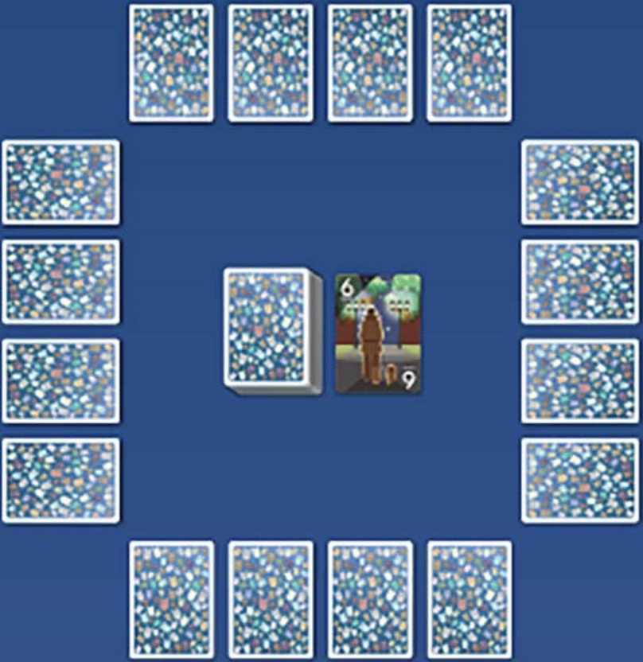

接近祂，找到祂，名为 CABO 的神秘独角兽。牌上的数字代表着你与祂的距离。游戏结束时最接近 CABO 的玩家获得胜利！
游戏设置
洗混牌库。向每个玩家面朝下发 4 张牌并排成一行。将牌库面朝下放置在桌子的中央，并将牌库最顶端的一张牌面朝上放置在牌库的一旁形成弃牌堆。
秘密地查看你面前的任意 2 张牌并且记住它们（这是玩家除了经其他指示外，最后一次看面前的牌的机会）。玩家不能交换面前的牌的顺序。
随机选取一个起始玩家
游戏过程
从起始玩家开始，顺时针进行游戏。在你的回合，你可以从牌库或者弃牌堆抽一张牌，或者宣告 CABO。
从牌库抽牌
从牌库最顶端抽一张牌，之后查看这张牌并从以下行动中选择一个执行：
1）将这张牌放置到弃牌堆。如果这张牌有特殊能力，你可以选择使用。
或者
2）用你的一张或多张牌交换这张牌。将换出的牌面朝上放置到弃牌堆，并且将换入的牌面朝下放置到你面前换出的牌所在位置。参照规则书「交换多张牌」部分以了解交换多张相同牌的细节。
从弃牌堆抽牌
从弃牌堆最顶端抽一张牌，之后用你的一张或多张牌交换这张牌。将换出的牌面朝上放置到弃牌堆，并且将换入的牌面朝上放置到你面前换出的牌所在位置。
宣告 CABO
如果宣告 CABO，你的回合结束。其他玩家再各自按顺序进行一个回合，之后结束这一轮。
交换多张牌
如果想要用多张牌进行交换，换出的牌必须为同样数字（比如全都是 6）。在弃掉它们之前，将它们向前推出，并且翻开其中所有面朝下的牌，将换入的牌放置到其中一张换出的牌的位置上。
如果推出的牌数字不相同，将它们返回至原位置并保
如果有三张或者更多的牌不相同，从牌库额外抽一张牌，并且面朝下放置到你面前最左或最右的位置，你不能看这张牌。
卡牌特殊能力
如果你从牌库抽到一张有特殊能力的牌，你可以将这
- 7-8 PEEK：
- 秘密地查看你自己的一张面朝下的牌。
- 9-10 SPY：
- 秘密地查看其他一位玩家的一张面朝下的牌。
- 11-12 SWAP：
- 将你的一张牌和另外一位玩家的一张牌交换（不要改变这两张牌的正反）。
神风特攻队
如果一个玩家在当轮结束时，面前有且仅有 2 张 13 和 2 张 12。该玩家记 0 分，其他每位玩家记 50 分。实现神风特攻队的玩家可以宣告 CABO。
每轮结束
当（1）一个玩家已经宣告 CABO 并且其他玩家都再进行了一回合后，或者（2）牌库被耗尽时，本轮结束。
如果游戏尚未结束，将牌洗混之后再进行一轮。上一轮得分最低的玩家成为新的起始玩家。如果出现平手，最靠近上一位起始玩家的玩家成为新的起始玩家。
记分
你的本轮得分为本轮结束时你面前的牌的数字总和。
但是，如果是由你宣告 CABO 并且你的数字总和最低（或者最低但与他人平手），你记 0 分；如果是由你宣告 CABO 但你的数字总和不是最低，记你面前的牌的数字总和的分数，并额外加 10 分。
记录所有玩家本轮的分数，并且与之前轮的分数加总。
游戏结束
游戏会在有一位玩家分数超过 100 时结束。此时分数最低的玩家获胜。如果出现平手，最后一轮得分更低的玩家获胜。
分数重置
若一轮结束后，一位玩家的总分恰好为 100 分，将他的分数重置到 50 分。每位玩家每局游戏只能重置一次。
翻译：雪松 描改：楚滨